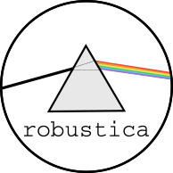

robustica#

Fully customizable robust Independent Component Analysis (ICA).


Description#
This package contains 3 modules:
RobustICADefines the most important class that allows to perform and customize robust independent component analysis.
InferComponentsRetrieves the number of components that explain a user-defined percentage of variance.
examplesContains handy functions to quickly create or access example datasets.
Requirements#
In brackets, versions of packages used to revelop robustica.
numpy(1.19.2)pandas(1.1.2)scipy(1.6.2)scikit-learn(0.23.2)scikit-learn-extra(0.2.0)joblib(1.0.1)tqdm(4.59.0)
Installation#
pip#
pip install robustica
local#
git clone https://github.com/MiqG/robustica.git
cd robustica
pip install -e .
Usage#
from robustica import RobustICA
from robustica.examples import make_sampledata
X = make_sampledata(ncol=300, nrow=2000, seed=123)
rica = RobustICA(n_components=10)
S, A = rica.fit_transform(X)
Tutorials#
Contact#
This project has been fully developed at the Centre for Genomic Regulation within the group of Design of Biological Systems
Please, report any issues that you experience through this repository’s “Issues” or email:
License#
robustica is distributed under a BSD 3-Clause License (see LICENSE).
References#
Himberg, J., & Hyvarinen, A. “Icasso: software for investigating the reliability of ICA estimates by clustering and visualization”. IEEE XIII Workshop on Neural Networks for Signal Processing (2003). DOI: https://doi.org/10.1109/NNSP.2003.1318025
Sastry, Anand V., et al. “The Escherichia coli transcriptome mostly consists of independently regulated modules.” Nature communications 10.1 (2019): 1-14. DOI: https://doi.org/10.1038/s41467-019-13483-w
Kairov, U., Cantini, L., Greco, A. et al. Determining the optimal number of independent components for reproducible transcriptomic data analysis. BMC Genomics 18, 712 (2017). DOI: https://doi.org/10.1186/s12864-017-4112-9
Modules